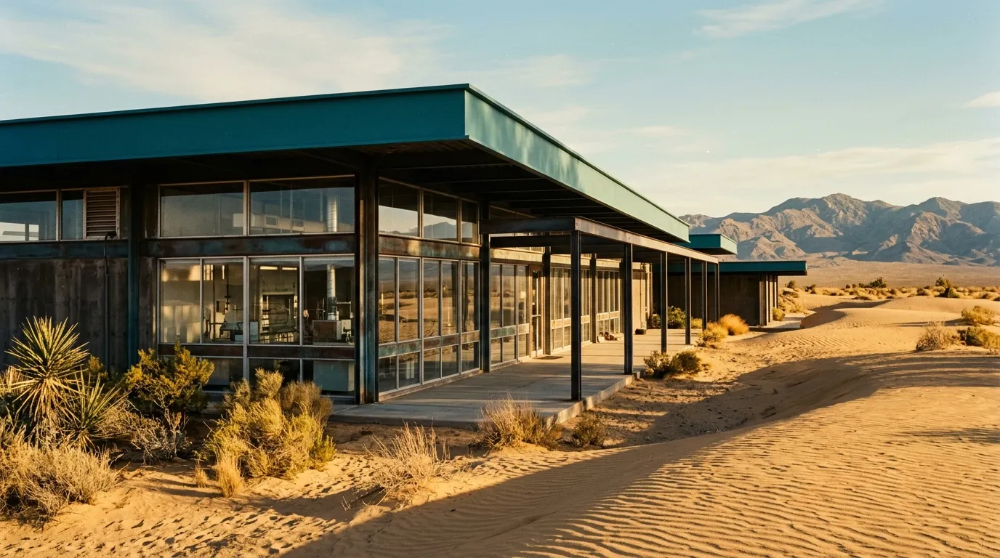
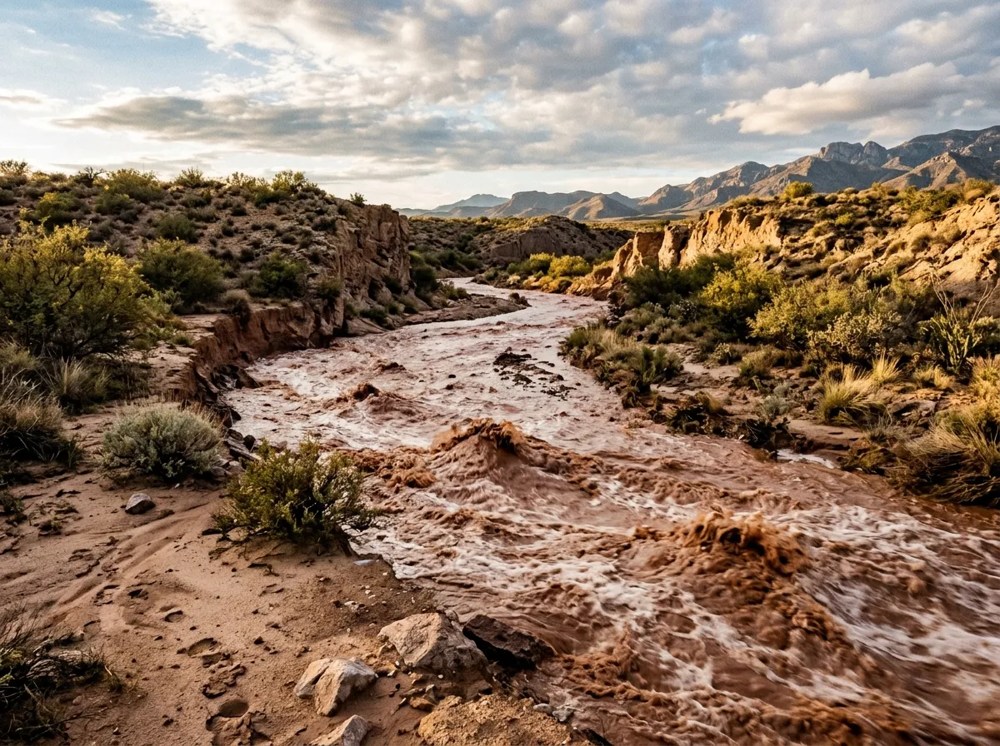
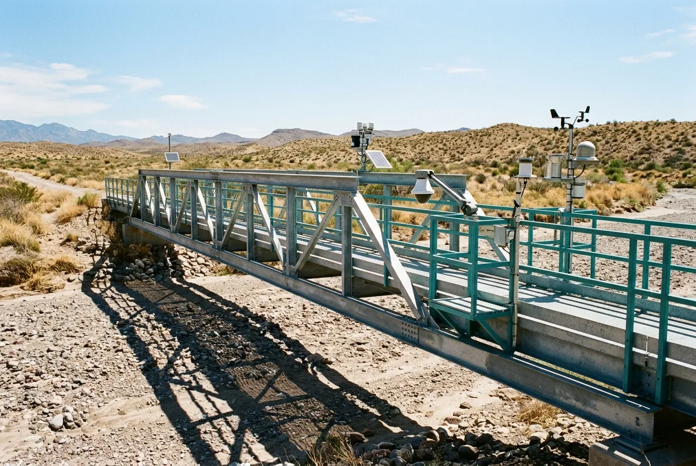
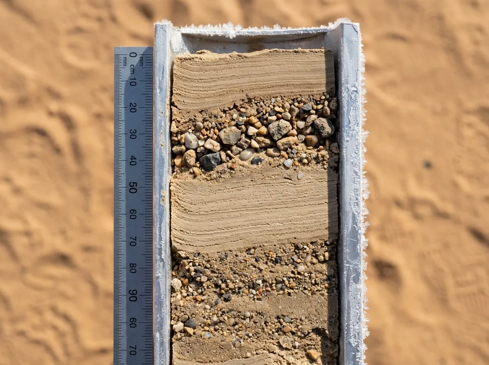
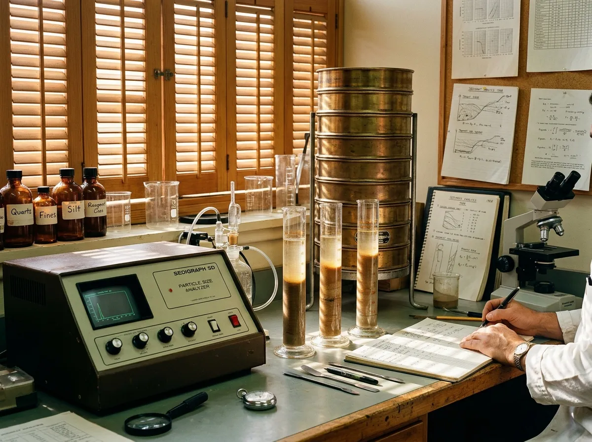

Standard fluvial geology relies on steady-state river systems where sediment settles gradually under predictable laminar conditions. In desert arroyos, sediment transport is non-Newtonian, violent, and intensely compressed in time. During sudden summer convective storms, dry wash channels transition from dry sand to two-metre hyper-concentrated mudflows in less than four minutes, suspending boulder-sized clasts alongside colloidal montmorillonite clay. As flood velocity wanes, these suspended sediments drop out of suspension simultaneously without hydraulic sorting, creating chaotic, unstratified event beds that begin irreversible mineral alteration the moment the flow recedes.
Amargosa Basin Field Station · Est. 1968
Cryogenic Sedimentology at the Arroyo Flash-Flood Threshold
FlashCore captures and preserves uncompacted fluvial strata during ephemeral desert flash-flood pulses in the Amargosa Basin.

In hyper-arid desert basins, flash-flood events deposit their entire geological sediment record within a forty-five-minute convective surge before surface moisture evaporates under extreme desert heat. Operating from our field station in the Amargosa Desert since 1968, FlashCore deploys pneumatic percussion corers directly into turbulent arroyo channels at the exact moment of peak flood discharge. By stabilising liquid silt and gravel strata with cryogenic liquid nitrogen within six minutes of extraction, our archive prevents sun-baked caliche cementing and preserves primary sediment structures for international research.
The Doctrine
The Ephemeral Sedimentary Window

Within three hours of flood cessation, surface temperatures exceeding forty-eight degrees Celsius draw capillary moisture upward through the deposit, precipitating calcium carbonate and dissolving delicate clay fabric before standard coring equipment can reach the site. FlashCore circumvents this post-depositional alteration by maintaining permanently instrumented acoustic stage gauges across nine kilometres of the Amargosa wash. When automated sensors detect an incoming bore, field teams intercept the peak flow at designated reinforced catwalk stations, driving hollow-barrel aluminium core tubes through the slurry and freezing the pore fluid in-situ before diagnostic boundary layers collapse.
Station Network
Instrumented Alluvial Fan Observation Catwalks
Five stations step down the Amargosa fan from bedrock notch to silt sink. Each one is built to take a boulder strike at bore arrival and a surface temperature of 48 °C the same afternoon, so steel sections are over-specified and every sensor sits in a shielded housing.
Station 01 · Elevation 420 m
Upper Arroyo Notch
A narrow bedrock constriction that measures the initial head surge. An ultrasonic depth radar logs stage at 10 Hz, and a 120-second early warning relay passes the bore signal down-fan to the coring crews before the front clears the notch.
The constriction forces a Froude supercritical transition, so the first wave is steep, short and nearly free of fine suspended load. Recorded front velocities at this station run from 2.4 to 3.6 metres per second.
- SensorUltrasonic radar, 10 Hz
- Warning lead120 s
- Channel width6.2 m
Station 02 · Elevation 310 m
Mid-Fan Transition Braid

The primary pneumatic coring catwalk, spanning 18 metres of active braided wash. Dual liquid nitrogen storage tanks sit on the abutment, so the freezing jacket can be charged within the first minutes of crest without a vehicle crossing the channel.
Station 03 · Elevation 220 m
Alluvial Toe Silt Basin
A fine-grained muddy terminal sink. Turbidity sensors log suspended sediment up to 520 g/L, well beyond the range of conventional optical probes, using a calibrated acoustic backscatter array.
Station 04 · Elevation 260 m
Caliche Bench Weathering Plot
A control array measuring post-flood carbonate crust formation across 10-year intervals.
Station 05
Cryogenic Sample Vault & Mobile Prep Lab
A climate-stabilised −20 °C holding facility housing 1,480 vacuum-sealed aluminium core tubes. Tubes are racked horizontally by accession year and logged against a temperature trace sampled every 30 seconds, so a single thaw event would be visible within the hour. The adjoining mobile prep lab receives fresh cores from the catwalk and carries out first-pass logging under a dry nitrogen atmosphere.
Hydrograph Ledger
Convective Flash-Flood Kinematics and Surge Profiles
A perennial river rises over hours and deposits over weeks. An Amargosa arroyo does both in under an hour, and the figures below set the operating limit for every station and every crew.
| Parameter | Perennial river | Amargosa flash |
|---|---|---|
| Peak discharge arrival | 18–36 hours | 3.8 minutes |
| Sediment-to-water ratio | 0.5–2% | 38–54% by volume |
| Pore-water evaporation timeframe | Indefinite | 2.5 hours to initial desiccation crack formation |
| Core recovery window | Months | Strict 45-minute deployment limit |
- 3.8 minSurge Rise Time Bore arrival to peak stage, median of 41 logged events.
- 54%Sediment Volume Upper bound of the hyper-concentrated flow phase, measured at Station 03.
- 1,480Preserved Event Cores
- 6 minTarget Cryo-Stabilisation Crest to frozen pore fluid.
Note. Median grain size in the deposited beds sits between D50 38 and 112 µm, with a sorting coefficient above 2.4 in every accessioned event, which is the signature of simultaneous fallout rather than progressive settling.
Extraction Sequence
Rapid-Deployment Pneumatic Percussion Extraction
The coring cycle runs to a fixed clock. Each phase has a pass condition, a crew lead who calls it, and an abort rule if the flow stage rises above the barrel clamp height.
Phase 01 · 0–2 min
Hydraulic Trigger & Barrel Drive
A high-frequency air hammer drives a 76 mm thin-walled aluminium tube through supercritical flow into bedrock refusal. The tube advances at roughly 0.7 metres per second, and the crew lead calls refusal from the hammer pitch, not the depth gauge.
Phase 02 · 2–4 min
Vacuum Cap & Extraction
The top seal engages a 0.8-bar vacuum pull to retain liquefied mud during crane retrieval.
Phase 03 · 4–6 min
Liquid Nitrogen Jacket Flooding
A dual jacket envelope floods with −196 °C liquid nitrogen, solidifying internal pore fluid instantly.
Event Core Catalogue
Holocene Flash-Flood Specimen Vouchers
Four accessions stand for six decades of convective pulses. Each is held as a sealed half-core with a working half, so any sub-sample request leaves the archive copy untouched.

Core FC-1968-A · Amargosa Cloudburst
1.84 m intact core
A basal pebble conglomerate grades abruptly into massive silt, and uncompacted fluidised pipe structures are preserved through the upper third of the section. D50 of the silt unit is 44 µm; clay fraction 11% montmorillonite-dominated.
Core FC-1983-C · El Niño Basin Fill
2.10 m dual-surge event
A preserved organic detritus lens shows zero biological decomposition due to instant freezing. D50 71 µm.
Core FC-2005-F · Centennial Arroyo Breaching
1.65 m supercritical dune bedding
Intact gravel cross-strata demonstrate upper-regime flow transitions.
Core FC-2024-B · Furnace Creek Mesoscale Pulse
1.42 m recent hyper-concentrated deposit
Micro-CT scan data show undisturbed interstitial clay platelets, with pore-throat geometry that a thawed core cannot retain. It is the youngest accession in the archive and the one most requested for reference scanning.
Instructional Residency
Postgraduate Arroyo Sedimentology Residencies

Fourteen days on storm standby
Doctoral candidates and survey hydrologists join a 14-day residential practicum timed to the winter frontal season. Mornings are laboratory work; afternoons and nights are standby, with radar and gauge stations staffed in six-hour watches. A cohort is limited to six, so every resident takes at least one core from crest to freezer.
Curriculum modules
- Convective Weather Radar Interpretation — reading reflectivity cells and cell-motion vectors for a 90-minute lead on bore arrival.
- High-Frequency Acoustic Profiling — stage, velocity and backscatter from the catwalk arrays.
- Cryo-Microtome Core Slicing — sectioning frozen cores at −20 °C without thermal smear.
- Laser Diffraction Particle Sizing — D50 and sorting coefficient from 2 mm to 0.04 µm.
Accommodation and support
Air-conditioned mid-century modular bunkhouses at Shoshone Basecamp, full nitrogen tank access, and a desert-ready 4WD support fleet. Residents are housed ten minutes from the laboratory and thirty from the nearest catwalk.
Peer Evaluation
Peer Evaluations from Geological Survey Investigators
-
FlashCore’s frozen sections showed primary water-escape structures that would have disintegrated under conventional drilling. We could measure pipe geometry that the field literature describes only from outcrop inference.
Dr Aris ThorneSenior Fluvial Morphologist, Great Basin Geological Survey -
Micro-CT of the 2005 centennial core resolved undisturbed pore spaces at a scale I had not seen in any thawed arroyo sample.
Elena RostovaResearch Fellow, International Arid Lands Consortium -
We used FlashCore’s granulometry data to redesign culvert capacities across interstate transit corridors, because the sediment load in the first four minutes is what blocks a culvert, not the water.
Marcus VanceChief Hydrologist, Southwest Water Resource Board
Intake Registry
Specimen Loan Protocols and Scientific Allocation
Material is released under IUGS research transfer guidelines. Applications are reviewed by the curator and one external sedimentologist, and a loan is issued as frozen half-core, laser granulometry data, or a place on a storm standby fellowship.
Seasonal storm standby
Winter frontal standby runs December to March. Summer monsoon standby runs July to September. Crews are on a 90-minute call-out from the first radar alert of either season.
Laboratory coordinates
FlashCore Research Station,Mile 14 Old Amargosa Highway,
Shoshone, CA 92384, United States
35°58′ N, 116°16′ W · Station Mile 14